Vintage Knobby Jar Gift Idea
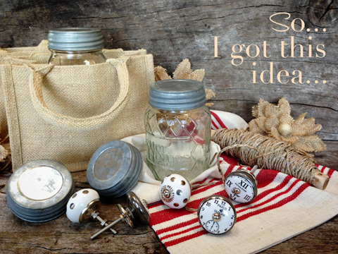
So, I got this idea, to create gift jars for the upcoming holidays. A few days ago, I spent far to much time at Craft World.
There are three types of stores that can suck me into a time warp, where the outside revolving universe stops and the store and I become one. That would be a grocery store, a hardware store and a craft store.
Gizmos, gadgets, power tools and hot glue….sigh… I am home. Anyway, I decided that I wanted to make some gift jars that I can fill with raw treats for Christmas this year. Keep in mind; these can be given as gifts any time of the year.
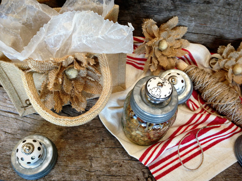
I had oodles of jars at home so that part was taken care of. I then stumbled upon these sweet drawer pulls. They cost me $2.99 apiece. The silver, vintage lids were $1.99 each. I had some real vintage ones at home but decided to save those for a future project. The small burlap bag was $2.98, and the burlap flower was $2.00.
If you check out the scrapbooking section, you will find all sorts of vintage looking items such as; keys, antique-looking medallions, watch faces, buttons, and so forth. All kinds of really cool stuff that can help you personalize your gift bags. On the bags, I attached some vintage looking keys that read; Journey, Love, Happiness, etc. I think I spent at least a good two hours in this store. I walked in, located a cart… checked it for fight-to-stay-in-a straight-line-wobbly wheel or the OMG-I-Am-Sorry-it-is-killing-my-ears-to-squeaking wheels, turned my phone to silence (can’t afford to have the flow of creative thoughts disturbed), did a few downward dog yoga poses, pulled out the credit card and sprung forward yelling…”CHARGE!!”
 When I shop in stores like these, I tend to grab items of interest and then after my basket is full, I find a vacant corner in the store and start to put my products and thoughts together. I am have been known to build flower bouquets in the aisles and when I take them up the register, the cashier looks at me with those eyes that say, “This is so beautiful, but I have to take it apart to scan each flower.” I look back at her with the eyes that say, “I know, it’s ok. I did it once; I can do again.” hehe
When I shop in stores like these, I tend to grab items of interest and then after my basket is full, I find a vacant corner in the store and start to put my products and thoughts together. I am have been known to build flower bouquets in the aisles and when I take them up the register, the cashier looks at me with those eyes that say, “This is so beautiful, but I have to take it apart to scan each flower.” I look back at her with the eyes that say, “I know, it’s ok. I did it once; I can do again.” hehe
This project was very easy and didn’t take hardly any time to put together. With just need a few tools you will be set. I won’t go into great detail on what size drill bit or wrench that I used because chances of you finding and using the exact same items as me are pretty slim. But by the time you are finished reading through this post and looking at the photos, you will have a pretty good idea what you will need to do. :)
These are all great items to keep your eyes open for at garage sales, discount stores, thrift stores or time-warping-time-sucking-craft-stores. Jars are a dime a dozen. They come in all shapes and sizes, old, and new. The main thing to keep in mind is having the right lid to fit the jar mouth. If you can’t find lids like the ones shown in the pictures, you could easily use the standard lids that come with jars and either paint them or cover the lid disc with fabric or cardstock paper.
I did my best to take photos throughout my journey. I hope you find them helpful and inspiring.
You will need a drill. Cordless or electric. I selected a drill bit that was a fraction
of a frog’s hair larger than the threaded stem that came with the drawer pull. Find the center
of the lid and place a dot with a marker where to drill.
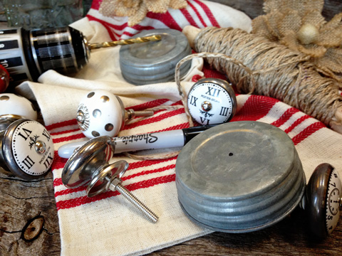
Be sure to position the
lid on a solid surface. As you put slight pressure down on the drill when creating the hole,
be careful because as the drill breaks through the material, it can quickly move on to the
surface below. So, be sure that the surface isn’t something precious like your kitchen
counter. I used an old cutting board.
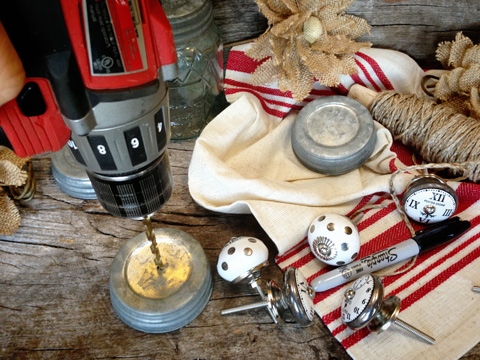
After you drill the first hole, double check to make sure the drawer pull screw fits
through just fine before you move on to the other lids. Better to mess up just one than
all. Well, best not to even mess up one, but you know what I mean.
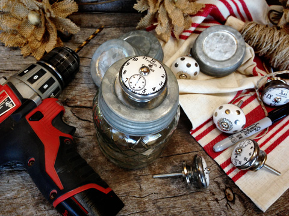
I tested a few of the drawer pulls, and they all fit. We are good to go!
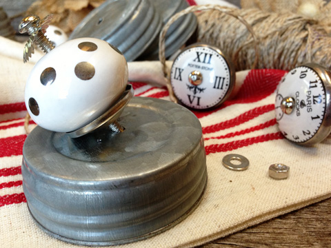
I then proceeded to drill each lid.
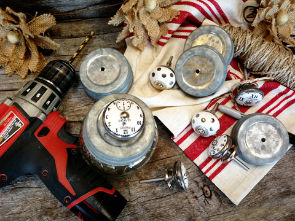
My drawer pull came with a small washer and nut to secure it with. Hand tighten.
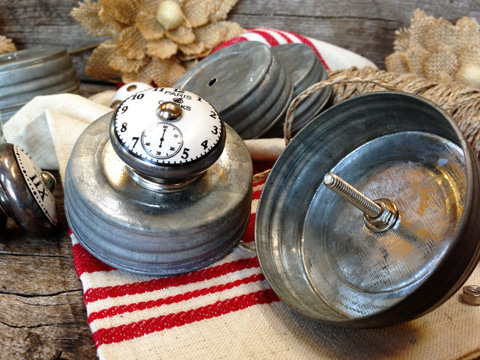
Then to prevent the knob from wiggling, use a wrench to tighten it down with.
Bob and I are fans of Craftsman tools, but oh those Snap-On ones shew! Goodness, I think we could
become Snap-On groupies and follow their trucks from state to state. hehe
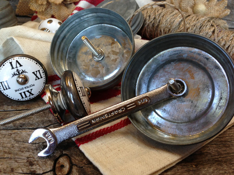
As you can see in the photo above, the drawer pull screw extends out quite far. There
are several options here. You can leave it, but it would most likely poke down into your
jar by about an inch or more. You can snip it with a strong grip and a pair of small bolt
cutters or some such. This technique works, I did one that way, but it left a sharp
tip which could be dangerous. To remedy that, I put a glob of hot glue over it for
protection. The third way is to cut it with a hacksaw. This is very very easy, you just need the tools; hacksaw and vise.
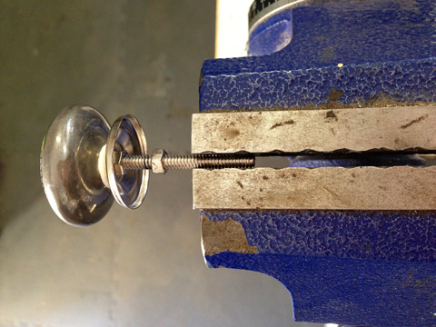
I hope these pictures are of some help. Make a mark on the threads where you
want to make the cut. If you are careful when measuring, you can cut it, so
the threads are long enough to screw into the nut but not protrude.
Be sure to have the nut to the inside of the cut… meaning that when you remove
the drawer pull from the vice (as shown below) the nut will be on the threads,
above the cut. This is important. That way when you take the nut off, it
“cleans” the threads from the cut so you can put the nut back on. Phew, I hope that makes sense.
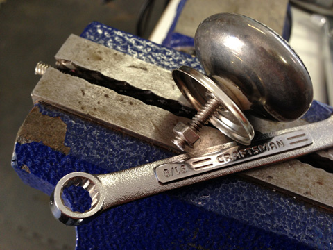
You can see in the photo below what it looks like when finished. The left side shows
the one that I snipped off and put hot glue over it. The right side is the thread that
was hacksawed.
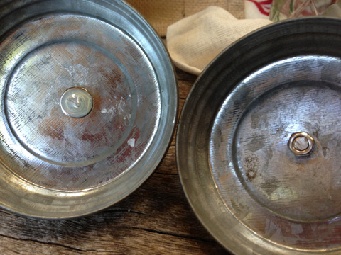
And there you have it! Sweet, vintage looking jars that are just begging to be filled
with raw treats!
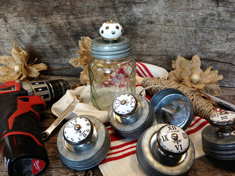
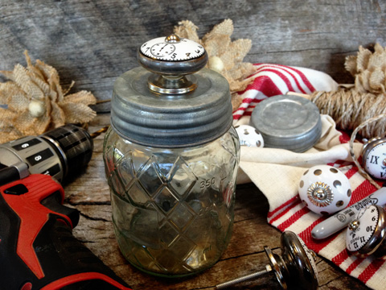
Now, for decorating the bags. Again, this will differ from person to person because it
will be based on what supplies you have on hand. This is an excellent way to reuse/recycle stuff
that you may already have around the house. Breathe new life into it!
I am using a burlap flower that came with a great wrapped stem. If your stem is
made of plastic and you don’t find it to be attractive, just remove the flower head from it.
Since I liked the stem to this flower, I coiled it around a pencil to give it a decorative touch.
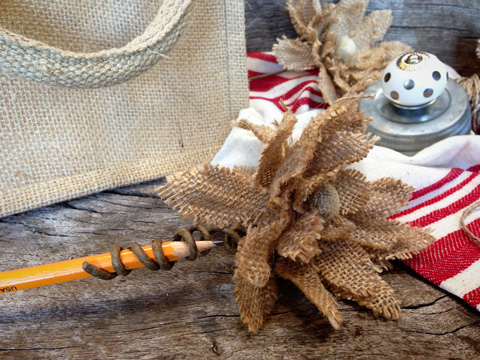
I used some twine to attach my keys to the flower.
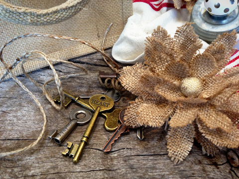
I then tied the twine to the base of the flower. Hot glue will be used here as well,
so it will be nice and secure when all is said and done.
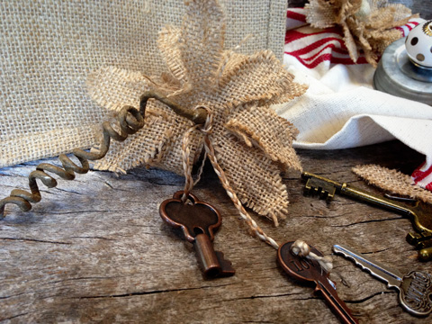
I put a hefty blob of hot glue on the back of the flower, making sure to get the glue on
the twine as well, then pressed it onto the burlap bag. Hold for about 20 seconds.
I would have taken a picture of that step but it is easy to figure out, plus I once had a
horrible experience where I loaded the back of a large bow with hot glue to put on
a wreath (back in my crafting days), and when trying to take a picture and holding the bow
upward, the hot glue poured into the palm of my hand. Need I say more? lol
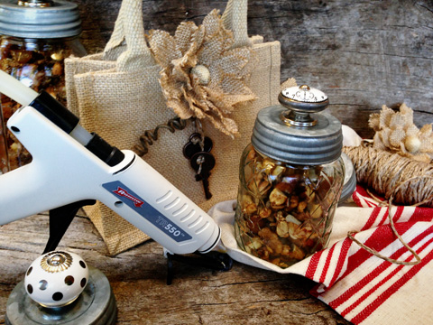
For added flare, line the bag with tissue paper before adding the jars. I like to use
crumpled up wax paper.
And that’s all folks….
These bags hold two jars which are a perfect sized gift. I will be filling them full of raw
granolas, trail mixes, and/or spiced nuts!
© AmieSue.com